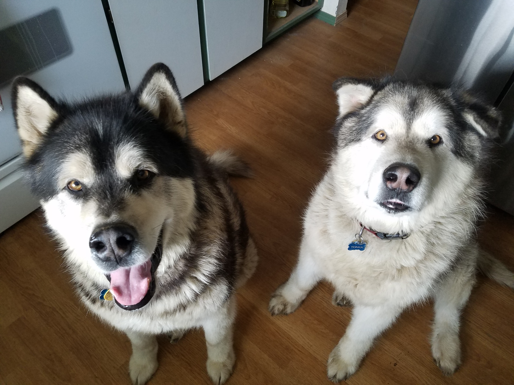

My name is Ed Abshire. I have been a developer for over 25 years. I am a father of one and have two cats (Mitchell and Spaz)
and two dogs (Bear and Tonka).
Home
This is the area where I would tell you about the stuff I like to do at home.
Work
This is where I would tell you how I was a member of the United States Air Force. Then I worked for Microsoft for 7 years.
After Microsoft, I left and went to a small company that ended up being bought and now I work for Visa.
School
In 2015, I decided that I would stop putting it off and went back to school to get my Bachelor's Degree.